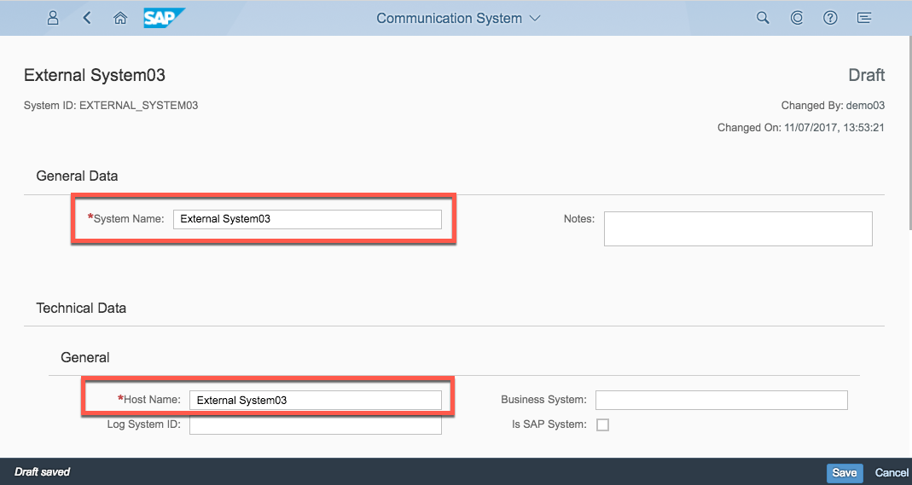
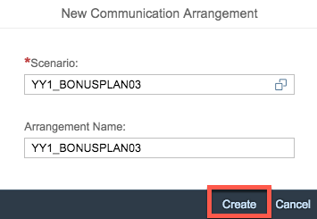
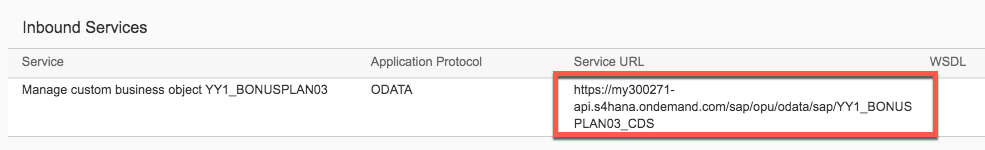
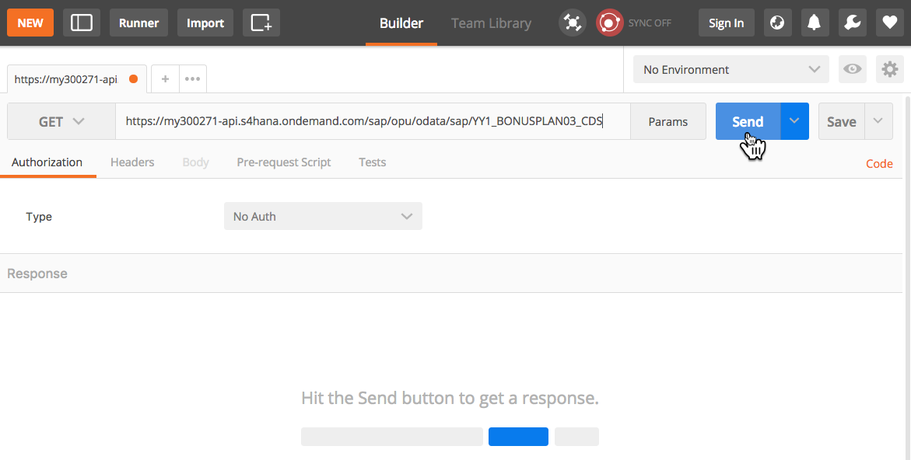
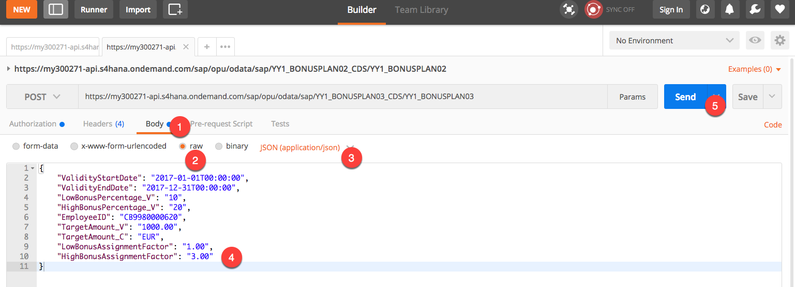
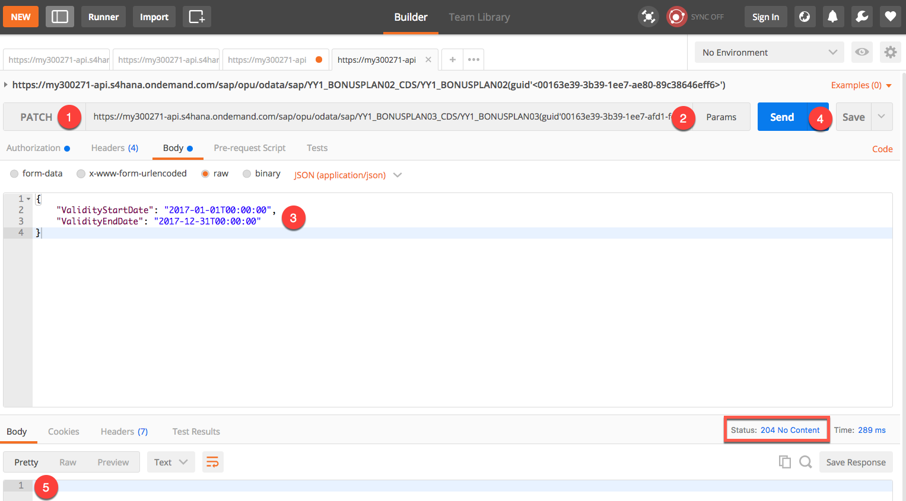
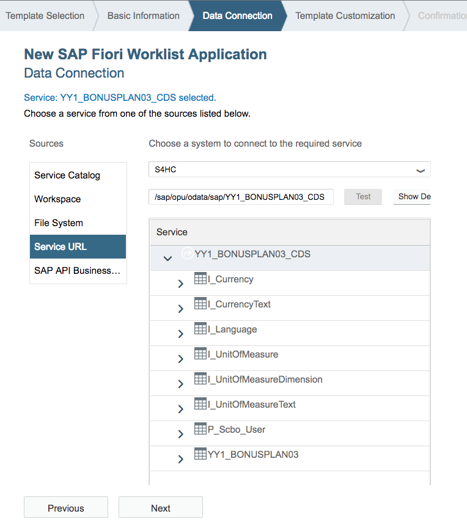
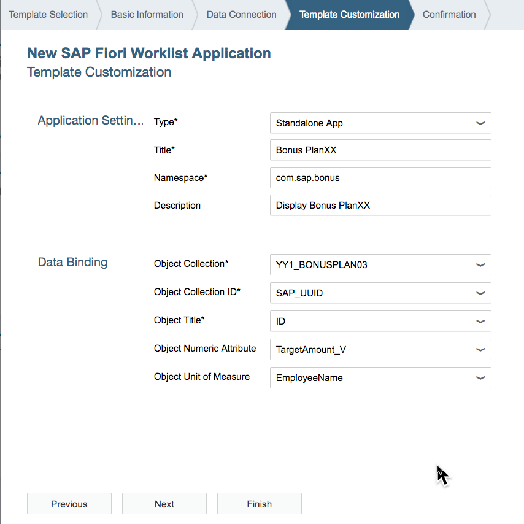

EXERCISE 04 - CUSTOM BUSINESS OBJECT EXPOSURE AS EXTERNAL WEB SERVICE | |
SAP Partner Workshop |
|
In this exercise, you’ll learn how
For further reading on S/4HANA cloud in-app extension, click link below. https://jam4.sapjam.com/groups/m8lprEZwfU3zPoX0myj1Xu/overview_page/RfBJ6ix9q00bbSseaxm4zW
The goal of this exercise is to expose the custom business object as web service for integration of your solution with other systems.
Below are the prerequisites for this exercise.
SAP_CORE_BC_EXT)SAP_CORE_BC_COM)A communication scenario is the basis definition for a communication between systems. It defines a solution to be made available for external systems.
Open Custom Communication Scenario Application

Start creating a new scenario by executing the “New” action.

Give following data to the new custom communication scenario ...
| Field Caption | Field Value |
|---|---|
ID |
YY1_BonusplanXX |
Description |
Bonus PlanXX |
Note: XX is the number assigned to you for the exercise.
 ... and create the scenario by executing the “New” action.
... and create the scenario by executing the “New” action.
Start adding an inbound communication service by executing the “Add” action

Search for YY1BONUSPLAN. Choose service YY1BONUSPLANXX_CDS and execute the “OK” action.

Background: That service had been created during Custom Business Object “Bonus Plan” publishing as in its definition the OData Service Generation flag was set for UI creation already.

Publish the Custom Communication Scenario.


To enable secure communication between different systems you have to register these systems and define the user which is authorized to use the connection.
The communication system represents the communication partner within a communication. For inbound communication, this is the external system that calls our Bonus Plan service.
We’ll create one Communication System for all systems that want to use our service as well as the user that they’ll have to use.
Add the Communication_Admin Business Role ID to the user. Open the "Maintain Business Users" Application. Search for your user and display it.


Click on Add to add the business roles.

Search for "Communication_Admin" role. Select the role and click OK to add the role.

Save.

Go back Home page.

Refresh the Home page. You will see the "Communication Management" catalog. Open “Communication Systems” Application.

Start creating a new system by executing the “New” action.

Give following data to the new custom communication scenario …
| Field Caption | Field Value |
|---|---|
System ID |
EXTERNAL_SYSTEMXX |
System Name |
External SystemXX |
Note: XX is the number assigned to you for the exercise.
 … and create the system by executing the “Create” action.
… and create the system by executing the “Create” action.
In the Opening Details view, fill the Host Name with “External SystemXX” as well.

Scroll down to “User for Inbound Communication” and start adding one by executing the “Add” action.

In the opening Pop Up, start creating a new User by executing the “New User” action.

This will lead to an automatic switch to the “Create Communication User” application, where you enter User Name “EXTERNAL_USERXX”, Description “User for “External SystemXX” Communication System” and a password before you execute the “Create” action.

This will switch you back to the Pop Up, where the User Name is filled now and you can confirm to add the Inbound Communication User with action “OK”. The just created user will be needed by callers to make use of the services.

Back in the Communication System details you finish its creation with action “Save”.

Finally, a communication arrangement links the solution’s scenario with the Communication system and its user and exposes the Service to be used.
Open “Communication Arrangements” Application

Start creation by executing the “New” action.

A pop up opens in that you use the value help for Scenario first.

Select the YY1_BONUSPLANXX Scenario.

This will set the Scenario and default the Arrangement Name, so that you can continue the creation via “Create” action.

In the opening Arrangement details you only need to set the “Communication System” to “EXTERNALSYSTEMXX”, which will automatically set the related User Name “EXTERNALUSERXX” as well. Execute “Save” to finish creation.

Copy the Service URL for the next step.

POSTMAN application is there to test Web services by sending requests and receiving responses. All included postman screenshots are reprinted with permission © Postdot Technologies Inc. All rights reserved.
Start the POSTMAN application. Ensure that you have disabled “SSL certificate verification” (File > Settings > General)

Enter the Service URL and execute “Send” action. You will get a Login Error as response in the response section, but this already shows that the system as such is reachable.

Change authorization type to “Basic Auth” now, enter Username “EXTERNALUSERXX” and the Password that you set for ExternalUSERXX.

Send the service request again. Now you will get a successful response of the service.

This way you can test, if the service is working in general.
Whenever you want to do a change to the Custom Business Object’s persistence, for security reasons you need to send a X-CSRF-Token with that change request. To get such a Token you have to send a get request first, which fetches one.
Copy the returned X-CSRF-Token to clipboard.
 The gotten token will be valid for 30 minutes and fetching a token will return the same as long as validity has not ended yet.
The gotten token will be valid for 30 minutes and fetching a token will return the same as long as validity has not ended yet.
To create a new bonus plan via the service, do the following in postman.
Add new header key “Accept” with value “application/json”, this will ensure that the response will be gotten in JSON format, which is easier to work with than XML.

Switch to the Body tab
Set the body type to “raw”
Now you additionally set the editor type “JSON”, which will enable correct syntax highlighting and header key for Content-Type
Enter the initial data for the to be created bonus plan in JSON format to the editor
{
"ValidityStartDate": "2017-01-01T00:00:00",
"ValidityEndDate": "2017-12-31T00:00:00",
"LowBonusPercentage_V": "10",
"HighBonusPercentage_V": "20",
"EmployeeID": <any>,
"TargetAmount_V": "1000.00",
"TargetAmount_C": "EUR",
"LowBonusAssignmentFactor": "1.00",
"HighBonusAssignmentFactor": "3.00"
}EmployeeID <any> shall be the one of a sales person that created sales orders with a Net Amount of more than 3000.00 EUR in 2016 and that are completed. In this exercise, you can use "CB9980000620".
Send the request.

The response will show the new instance’s data. From the ID you can see, that it’s a new one and that the logic to fill data automatically also worked successfully.

To update an instance, you have to use the internal SAP_UUID as technical key. To get this unique key, do the following steps
Switch the request method to “GET” and enter the request URL for bonus plan entities with the parameters
| Parameter Name | Parameter Value | Description |
|---|---|---|
filter |
ID eq ‘2’ |
filters for bonus plan of which the semantic key “ID” has value 2 |
select |
SAP_UUID |
restricts response data for the chosen bonus plan to its SAP_UUID |
The request will look like below:
https://
This is the example for using our system: https://my300271-api.s4hana.ondemand.com/sap/opu/odata/sap/YY1BONUSPLAN03CDS/YY1BONUSPLAN03?$filter=ID%20eq%20'1'&$select=SAPUUID
Send the request.
Copy SAP_UUID to clipboard.

Enter the request URL for a bonus plan entity and add the before gotten guid to its end following this syntax “(guid'
The request will look like below:
https://
This is the example for using our system:
https://my300271-api.s4hana.ondemand.com/sap/opu/odata/sap/YY1BONUSPLAN03CDS/YY1_BONUSPLAN03(guid'00163e39-3b39-1ee7-afd1-fc3701e4eed5')
Enter following JSON to the body
{
"ValidityStartDate": "2017-01-01T00:00:00",
"ValidityEndDate": "2017-12-31T00:00:00"
}Send the request
You will see that the update worked as you do get an empty body as response.

Go to “Data” tab > “New Query” > “From Other Sources” > “From OData Feed”

A pop up opens in that you enter the service URL and execute “OK”.

In the next Pop Up for Access to the Service (= OData feed) switch on the left side from “Anonymous” to “Basic”, then enter Username “dummy” and its Password on the right side, before executing the “Connect” action.

In the next screen select the item YY1_BONUSPLANXX and execute “Load”.

As result the excel workbook will be filled with the current Bonus Plan entities’ data.

You can use a service in SAP CP in many different way. You can use it to build a new UI, you can call it in your Java or JavaScript coding, you can use it in HANA Cloud Integration iFlows. Here I want to show only one simple use case on how to consume it: SAP Web IDE.
Create destination in SAP Cloud Platform. Open your SAP Cloud Platform account. Go to Connectivity > Destinations.
Create a new destination with the following attributes:
Save the destination.

Start SAP Web IDE Full-Stack to create the application. From SAP Cloud Platform account dashboard, select Services. Search for SAP Web IDE Full-Stack.

Go to SAP Web IDE Service.

Select: New Project from Template.

Select "SAP Fiori Worklist Application". Click Next.

Enter a name for a project, for example: bonusplanxx. Click Next.

On the step Data Connection, select Service URL. Select the destination you created before (S4HC) and the relative path of the OData service, as given in the Communication Arrangement screen (/sap/opu/odata/sap/YY1BONUSPLANXXCDS). You can now discover the details of the service and you can even discover the live data. Click on "Test". Click on Next.
C

Continue with the creation wizard to create a Fiori app out of the OData service. See below screen as an example. Click Finish.

Preview the application by click on Index.html file and click on preview button.

Application will display on another tab.


This concludes the exercise.
You should have learned how to expose the custom business object as web service for integration of your solution with other systems.
Please proceed with exercise 05.
 50 min
50 min